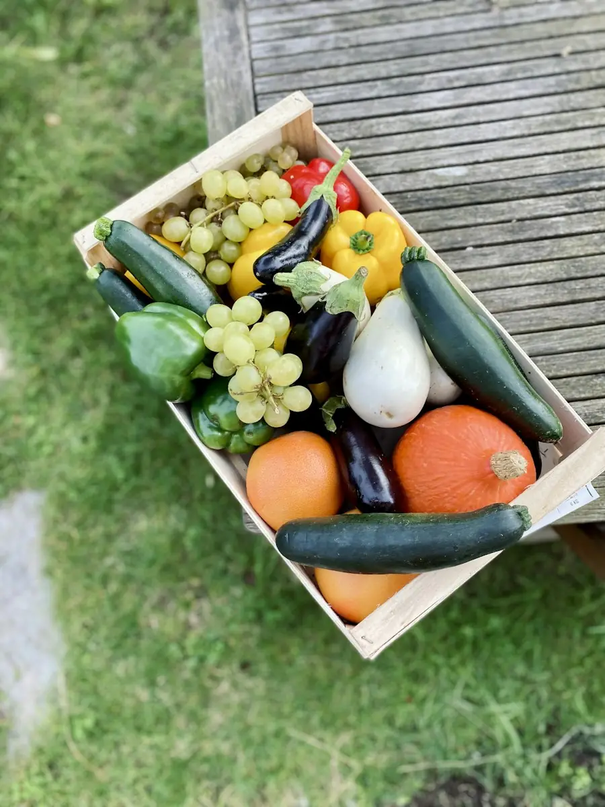

旬と取り置き・発送
いつ、何がとれる？
いつ、何がとれる？
旬カレンダーとご注文の案内
直売所に並ぶものの時期と値段の目安、取り置き・発送の頼み方をまとめました。天候によって時期は前後します。
旬カレンダー
月ごとの、とれるもの
濃い緑がいちばんの食べごろ、しま模様は少しだけ並ぶ時期です。赤い枠が今月（11月）です。
| 品目 | 1月 | 2月 | 3月 | 4月 | 5月 | 6月 | 7月 | 8月 | 9月 | 10月 | 11月 | 12月 |
|---|---|---|---|---|---|---|---|---|---|---|---|---|
| 米（新米） | 1月 少しあり | 2月 少しあり | 3月 少しあり | 4月 少しあり | 5月 少しあり | 6月 少しあり | 7月 少しあり | 8月 少しあり | 9月 旬 | 10月 旬 | 11月 少しあり | 12月 少しあり |
| トマト | 1月 なし | 2月 なし | 3月 なし | 4月 なし | 5月 なし | 6月 少しあり | 7月 旬 | 8月 旬 | 9月 少しあり | 10月 なし | 11月 なし | 12月 なし |
| なす | 1月 なし | 2月 なし | 3月 なし | 4月 なし | 5月 なし | 6月 少しあり | 7月 旬 | 8月 旬 | 9月 旬 | 10月 少しあり | 11月 なし | 12月 なし |
| にんじん | 1月 少しあり | 2月 なし | 3月 なし | 4月 なし | 5月 なし | 6月 少しあり | 7月 少しあり | 8月 なし | 9月 なし | 10月 少しあり | 11月 旬 | 12月 旬 |
| さつまいも | 1月 なし | 2月 なし | 3月 なし | 4月 なし | 5月 なし | 6月 なし | 7月 なし | 8月 なし | 9月 少しあり | 10月 旬 | 11月 旬 | 12月 少しあり |
| 大根 | 1月 旬 | 2月 少しあり | 3月 なし | 4月 なし | 5月 なし | 6月 なし | 7月 なし | 8月 なし | 9月 なし | 10月 少しあり | 11月 旬 | 12月 旬 |
| 白菜 | 1月 旬 | 2月 少しあり | 3月 なし | 4月 なし | 5月 なし | 6月 なし | 7月 なし | 8月 なし | 9月 なし | 10月 なし | 11月 少しあり | 12月 旬 |
| 柿 | 1月 なし | 2月 なし | 3月 なし | 4月 なし | 5月 なし | 6月 なし | 7月 なし | 8月 なし | 9月 なし | 10月 旬 | 11月 旬 | 12月 なし |
| いちご | 1月 少しあり | 2月 少しあり | 3月 旬 | 4月 旬 | 5月 少しあり | 6月 なし | 7月 なし | 8月 なし | 9月 なし | 10月 なし | 11月 なし | 12月 なし |
表は横にスクロールできます。
値段の目安
おもな品目の値段
大きさや出来によって変わります。直売所では袋ごとに値札をつけています（見本のため架空の値段です）。
| 季節の野菜大根・白菜・にんじんなど | 1袋 120円〜300円 |
|---|---|
| さつまいも約1kg | 350円 |
| 柿・いちごなどの果物 | 1パック 300円〜600円 |
| お米（コシヒカリ・白米）精米したて | 2kg 1,250円／5kg 2,900円 |
| お米（玄米） | 30kg 15,000円 |
取り置き
取り置きの流れ
「確実にほしい」「午後しか行けない」ときに。
- 前日17時までにご連絡お電話かフォームで、品目・数・受け取りの日をお知らせください。
- こちらからお返事収穫の見込みを見て、用意できるものをお伝えします。
- 当日12時までに受け取りお名前を書いた袋をレジ横に置いておきます。お支払いはそのときに。
発送
野菜セットとお米の発送
野菜セットは毎週水曜に、その週の野菜を詰めてお送りします。

| 野菜セット 小5〜6品・ふたり暮らし向け | 2,000円 |
|---|---|
| 野菜セット 大8〜10品・ご家族向け | 3,200円 |
| お米 5kg／10kg | 2,900円／5,600円 |
| 近畿 | 900円 |
|---|---|
| 中部・中国・四国 | 1,100円 |
| 関東・九州 | 1,300円 |
| 北海道・東北・沖縄 | 1,800円 |
お支払いは、商品と一緒に届く振込用紙で。お届け日の指定は水曜発送の翌日以降でお選びください。
よくある質問
ご注文のまえに
野菜セットの中身は選べますか？
その週にとれたものを詰めるため、品目はお任せです。苦手なものがあれば、ご注文のときにお知らせください。
農薬は使っていますか？
県の基準より少ない回数にとどめています。品目ごとの記録は直売所に置いてありますので、お気軽にご覧ください。
形の不ぞろいな野菜はありますか？
「わけあり」の札で、少しお安く並べています。煮物やスープにはまったく問題ありません。
贈り物用に、のしはつけられますか？
お米の発送に限り、簡単なのしをおつけできます。ご注文のときにお書きください。
取り置き・発送のご注文は、前日の17時まで
お電話 000-0000-0000（架空）か、フォームからどうぞ。畑に出ている時間は折り返しになります。